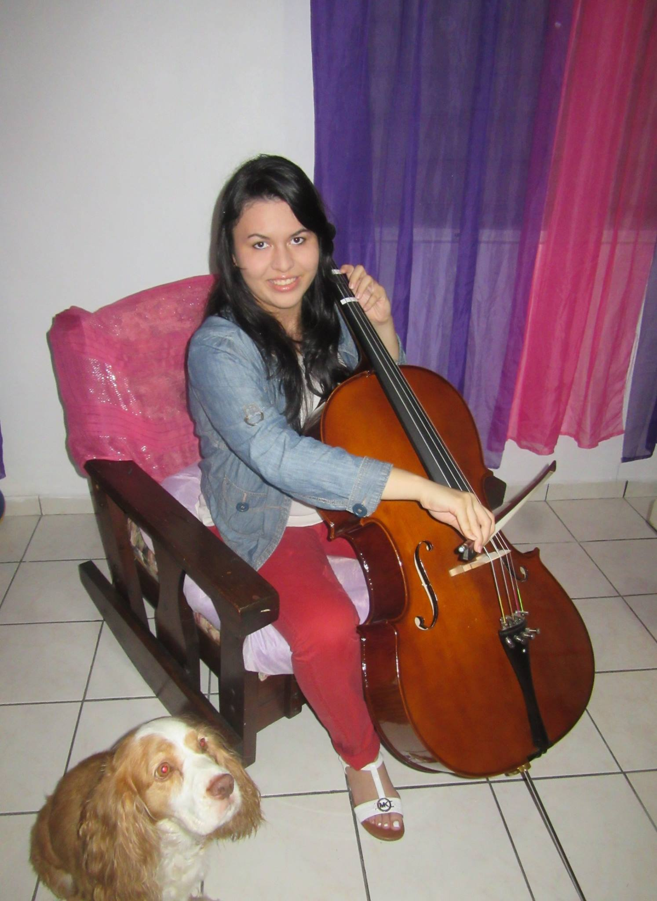
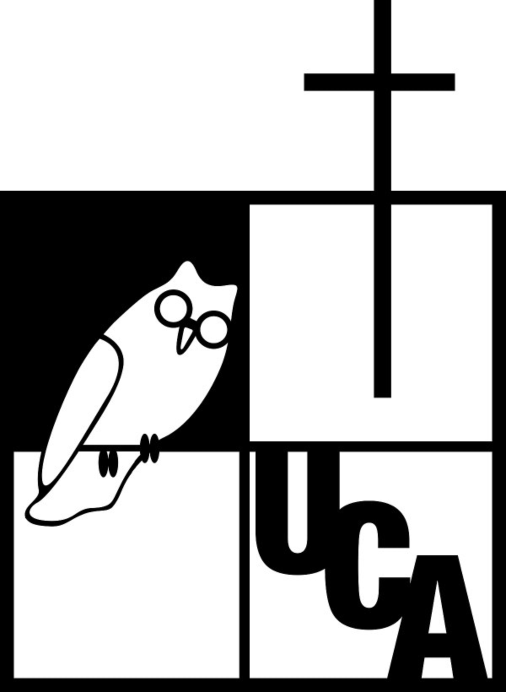

Natalia Alexandra Solórzano Paz (1999-presente)
Tabla de Contenido
- Biografia
- Gustos
- Historial Educativo
- Cursos Externos
Biografía
- Historia
- Natalia mejor conocida como Nat, Naty, nacida en San Salvador, El Salvador, es una jóven que desde sus inicios le ha encantado la música, la cocina, la tecnología, los animales, la naturaleza, y también cree que existe un Dios
- Ella ha vivido parcialmente en dos paises en su vida, su niñez fue en El Salvador, hasta que un día decidieron con su familia vivir un tiempo en Puerto Rico
- Es una artista apasionada del instrumento Cello, le encanta hacer postres, desde pequeña le ha interesado programar, y le encanta estar en competencias cientificas, y compartir sus conocimientos con sus amigos
- Vida Actual
- Actualmente Natalia estudia en la Universidad Centroamericana "José Simeón Cañas", mejor conocida como UCA, se desempeña en la carrera de Ingeniería Informática, y también tiene el testimonio de estar viviendo la Pandemia 2020 "Covid-19"
- Más Información
- A pasado sus días de cuarentena cocinando, aprendiendo italiano y durmiendo.... también estudiando claro!
Gustos

- Programación WEB
- Cocinar
- Tocar música/Cantar
- Estudiar idiomas (español, ingles, italiano, alemán)
- Comprar/Diseñar ropa
Historial Educativo

- Escuela Regional Bilingue Alcides Figueroa, Añasco, Puerto Rico
- Escuela Libre de Música Ernesto Ramos Antonini, Mayaguez, Puerto Rico
- Universidad Centroamericana José Simeón Cañas
- Colegio Sagrado Corazón, El Salvador
- Colegio Bilingue Internacional El Salvador
- Clases de Ingles Universidad de Puerto Rico
Cursos Externos

| Curso |
Importido por |
Hora |

| Programación WEB |
Pedro y Douglas |
10:00-12:00 |

Base de Datos |
Miguel y Walter |
14:00-16:00 |
| NodeJS |
Douglas y Pedro |
19:00-21:00 |